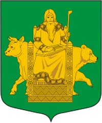
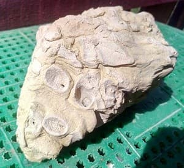
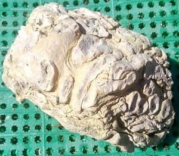
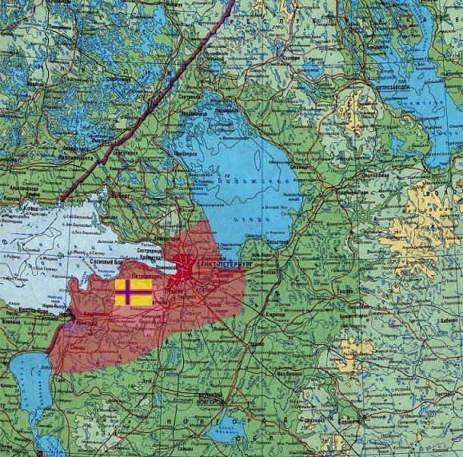
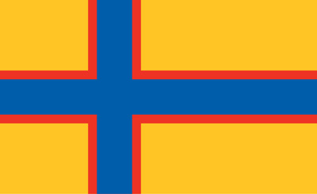

Волосовский район расположен на юго-западе Ленинградской области. Регион входит в историческую область Ингерманландия и занимает центральную часть Ижорской возвышенности. На сайте собраны материалы по истории района, населённым пунктам, памятным местам, старым картам и воспоминаниям жителей.
Этот сайт — попытка разобраться, что это за место и откуда оно взялось. Кто мы и зачем.
Есть версия, что название города восходит к языческому богу Велесу. Придумка красивая, но сомнительная.
На шведской карте 1676 года в точке города Волосово небольшой населенный пункт - Woislava, невдалеке Wolosowa. Вероятно, современное название восходит к ним. А они, возможно, к финским, с характерным окончанием -ва.
Волосовский район, находясь на Ижорском плато (~ 140 метров над уровнем моря. Высота Исаакиевского собора в Санкт-Петербурге -101,4 метра), имеет особенности нехарактерные для области.
В частности, здесь почти нет комаров. Здесь самая плодородная земля в регионе - дерново-карбонатные почвы, которые еще называют "северный чернозем". Здесь, практически, не бывает луж, так-как грунты легко пропускают воду. Здесь, преимущественно, равнинная местность без оврагов, возвышений, низменностей. Тут растет самая вкусная в области картошка - "Волосовская".
А высоко в небе, на 10 киллометровой высоте оставляют полосы самолеты, летящие по международным авиатрассам, таким, как: Франкфурт-Пекин, Пиза-Санкт-Петербург, Лондон-Шанхай, Париж-Гуанччжоу, Амстердам-Тяньцзинь и многим другим. (Временно летать перестали).
О причинах образования Ижорской возвышенности с уверенностью сказать невозможно, но есть научная гипотеза.
В Девонский период Палеозойской эры, примерно 400 млн лет назад, ничто не предвещало. И, вдруг, как рубануло!
Сонная поверхность взлетела на высоту более трехсот метров. Произошла катастрофа континентального масштаба - выброс массива площадью в три тысячи кв.киллометров на высоту горы.
Единая структура разорвалась на фрагменты и осела. Пустоты заполнились, сформировав плато на высоте порядка 140 метров над уровнем океана. По сути, произошло образование "столовой горы" тектоническим характером.
Таким же образом формировались великие горные хребты, как Урал или Тянь-Шань, над межплитными линиями напряжений.
За, непостигаемое умом время в миллионы лет, ландшафт утюжился наступающими и отступающими ледниками, бессчетно раз менялся климат, приходила и уходила вода, сменялись флора и фауна, но возвышенность сохранилась.
В результате причудливых действия сил природы сегодня поверхность Ижорской возвышенности состоит из незначительного слоя плодородного земляного грунта и, неизвестно скольки́ метровой, монолитной плиты под нeю.
От поверхности до удара по камню часто бывает "на штык лопаты". Потом ломом. На глубине 5-ти метров - только взрывать.
Таким образом, сверху покрытие тонким слоем самой плодородной в Ленинградской области земли, ниже плита с оттисками фрагментов жизни нам неведомой. На это указывают окаменелости, которые встречаются в известняке.


Из этого, лежащего под ногами, известняка сделаны все каменные постройки, включая крепости Нарва, Ивангород, Ямбург, Гдов, Копорье, Изборск, Порхов, Псков и Гатчинский дворец, который 4 года был официальной резиденцией Российского Императора.
На площади района в 2,7 тысячи квадратных километров расположено около 200 населенных пунктов, с населением порядка 48 000 человек.
Около 58% земель хозяйственно освоены (населенные пункты, поля, дороги), около 42% не освоены - леса, пустоши, болота.
Плотность населения района 19 человек на квадратный километр.
Для сравнения:
- плотность населения Псковской области 10,
- Ленинградской области 25,
- Санкт-Петербурга 4000,
- Москвы 5000,
- России 8.4,
- Токио 6000-6400 человек на кв.км.
Озер почти нет, но значительно количество речек общей протяженностью 535 км. Самая большая из них - река Луга.
Волосовский район - часть исторического района Ингерманландия.
По сути, вся Ленинградская область, за исключением Карельского перешеека, географическая область, называемая Ингрия.
Рядом были Эстляндия, Финляндия, Курляндия, Лапландия. А здесь Ингерманландия. Не было ни Петербургской губернии, ни Ленинградской области. Была Ингерманландия.

История заселения Ингрии ускользает в глубину времен.
По этническим признакам, на сегодня считается, край населяли: водь, ижора, эсты, ингерманландские финны, норманы.
По довольно убедительной версии Старая Ладога была основана норманами. И называлась Альдейгьюборг. Но, впоследствии, более развитая цивилизация ассимилировала в себя примитивную. И варяги растворились в славянской культуре. А сложное для нас название города превратилось в Ладогу. Очень похоже.
В 9-12 веке Ижорская возвышенность начинает осваиваться переселенцами славянских племен. По сути, русские это смесь трех этносов: финно-угров, славян и норманов.
Вероисповедание, с принятием христианства, в основном, лютеране и православные. В Волгово сохранилась и восстанавливается церковь святой Ирины - православный храм и русских и финнов.
Свидетели довоенного времени рассказывают, что финны и русские были православными, эстонцы лютеранами.
В лесах Волосовского района ягоды: малина, морошка, черника, голубика, брусника, клюква, грибы всех видов. Рассказывают, рыжиков подводами возили. Сейчас тоже бывает не унести.
Обитают: косуля, лось, кабан, волк, медведь, белка, куница, норка, енотовидная собака, рысь, барсук, бобр т.е. все животные, что водятся в нашей полосе от Балтийского моря до Тихого океана. Разве, что уссурийский тигр не встречается.
Среди птиц глухари и тетерева, особенно много горлиц, вдоль дорог часто можно встретить семью чибисов, у воды - цаплю, на столбе аиста, а в небе беркута.
На пролете гусиные и лебединые клинья.
Леса, как правило, еловые, тяжелопроходимые. Но есть и светлые сосновые, в основном в районе русла Луги.
Древняя земля богата историческими памятниками, начиная с языческих курганов, заканчивая многочисленными усадьбами остзейских баронов. (Ostsee - Балтийское море, с немецкого). Достопримечательностей много, но мало достопримечательного.
К сожалению, не найти теперь тех курганов и развалин от тех усадеб. Нечего ответить на вопрос - что посмотреть? Причем, совсем недавно, усадьбы и приусадебные постройки являли собой хоть и заброшенные, но крепкие строения.
Окончательно они рассыпались не при советской власти, хоть та славно для того потрудилась, а в последние 20 лет. И сегодня, оставшееся стремительно разрушается. Смотреть будет не на что.
Практически, любая деревня хранит фамилии, которыми написана Российская История.
Мало кто отмечает, что Лужский рубеж немцы прорвали именно в Волосовском районе. И в этом плане история богатая.
